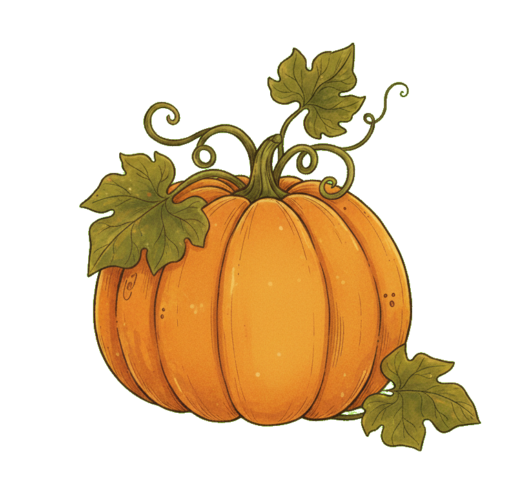
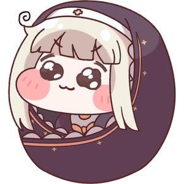
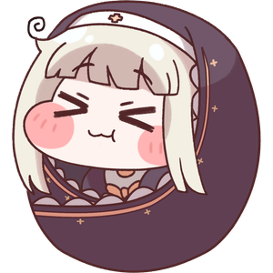
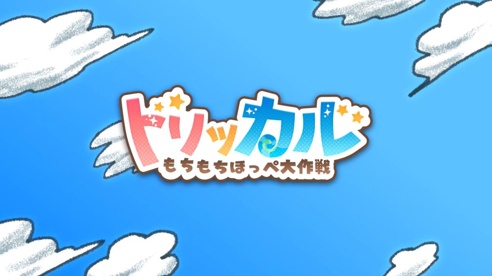

Game Clear
この空間の幸福度は限界を超え、立派なﾎﾊﾞｷﾞを育てることに成功しました!
本作は EPID GAMES様の「トリッカル・もちもちほっペ大作戦」と、その二次発生物である「ｽﾋﾟｷ」のファンゲームです。
もし原作未プレイならぜひプレイしてください。(※ただしｽﾋﾟｷは出てきません)



ここはあなただけの小さな飼育スペース
不思議ないきもの(?) ｽﾋﾟｷたちと触れ合って癒されよう

この空間の幸福度は限界を超え、立派なﾎﾊﾞｷﾞを育てることに成功しました!
本作は EPID GAMES様の「トリッカル・もちもちほっペ大作戦」と、その二次発生物である「ｽﾋﾟｷ」のファンゲームです。
もし原作未プレイならぜひプレイしてください。(※ただしｽﾋﾟｷは出てきません)
何かを持ってきてくれたようだ